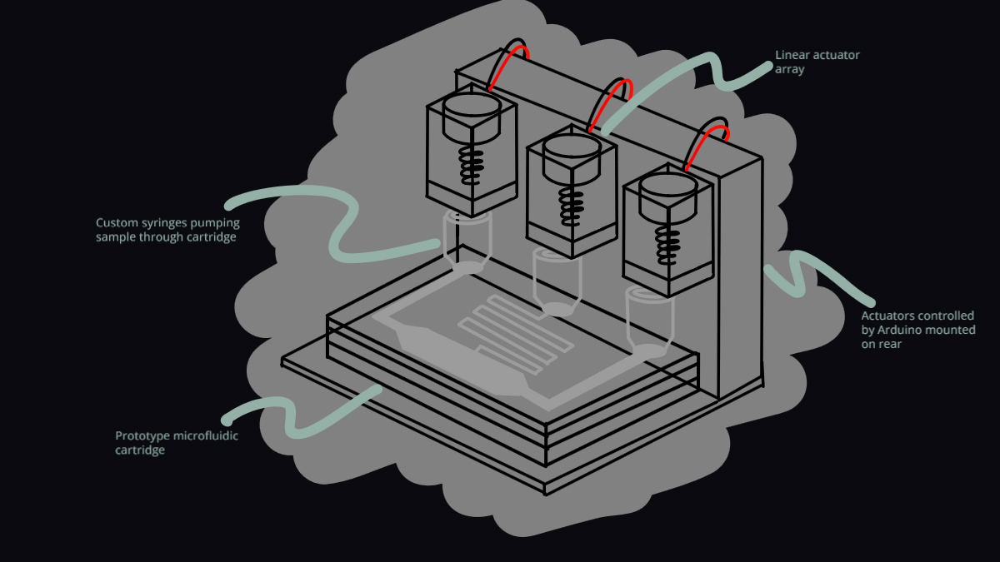

The client had developed an incubator to replicate cancer-fighting CAR-T cells specific to individual patients. Before treating the patient with the cells, a sample from the incubator needed to be tested for foreign cell contamination. This was previously done as a manual lab process taking multiple days. By automating the process, results could be obtained within a few hours. This dramatically improved the patient experience by reducing overall treatment time.

Rig made up of Arduino-controlled linear actuators for testing different cartridge geometries.
The project started with a 2-week sprint to facilitate a workshop with 20 people from across the client's team and our own. I planned and facilitated the workshop, which generated fantastic learnings and led to the full product development project. I owned mechanical design of a microfluidic cartridge for separating human CAR-T cells from microbial cells. Initially, I built an adjustable actuator test rig. This actuated the cartridge prototypes I developed allowing for rapid testing and iteration. The adjustability of the test rig was crucial in accommodating developing cartridge designs. I used multiple methods to prototype the cartridge, ranging from SLA printed channels to laser-welded injection-moulded parts. This strategy allowed me to de-risk ideas quickly with low fidelity models before committing to any tooling.
A highlight for me was delivering my rig and some prototype cartridges to the client's lab for comparison to their manual lab process. Working alongside their scientists was valuable in improving my understanding of the process. They achieved a human cell reduction of 99% within 30 minutes, while my automated rig achieved a reduction of 95% within 2 minutes - well above the initial requirements. This was labelled the "best result of the project" by our lead scientist, and a proud achievement in my career.
I'm happy to discuss this project or explore new opportunities.